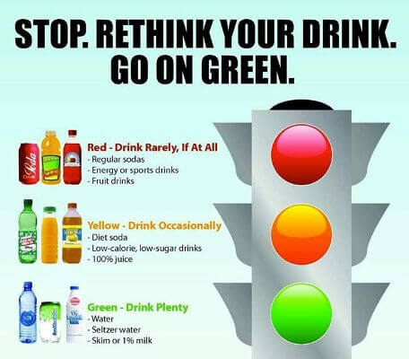
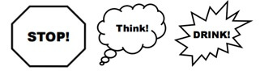

 What you drink makes a bigger difference to your health than you think. Drinks like soda, sports drinks and energy drinks are loaded with sugar and are empty calories.
Sugary beverages are the single largest source of calories in the American Diet, providing an average of about seven percent of total calories per person (HHS/USDA, 2010). The average person in the U.S. drank 45 gallons of sugary beverages in 2009. Sugar drinks (sodas, fruit drinks, sports drinks, sweetened teas, energy drinks) accounted for 46 percent of all added sugars in the American diet in 2010 (Ervin & Ogden, 2013)
Increasing access to more healthful beverages is important for reducing sugary beverages consumption.
1 to 2 cans a day or more— 26% greater risk of developing type 2 diabetes (Malik et al., 2010).
24% of adults drinking soda in California. 60% increase in a child’s risk for obesity with every additional daily serving of sugary beverage.
In 2013, 27 percent of teens drank one or more soda a day, 19 percent drank two or more, and 11 percent drank three or more (Kann et al.,2013).
Two out of three adults and one out of three children in the United States are overweight or obese. Rising consumption of sugary drinks has been a major contributor to the obesity epidemic.
A typical 20 –ounce soda contains 15 to 18 teaspoons of sugar and upwards of 240 calories. A 64 –ounce fountain cola drink could have up to 700 calories.
On any given day, half the people in the United States consume sugary drinks; 1 in 4 get at least 200 calories from such drinks; and 5% get at least 567 calories—equivalent to four cans of soda (Ogden et al., 2011). Sugary drinks (soda, energy, sports drinks) are the top calorie source in teens’ diets (226 calories per day), beating out pizza (213 calories per day) National Cancer Institute, 2012.
People who consume sugary drinks regularly—one to two cans a day or more—have a 26% greater risk of developing type 2 diabetes than people who rarely have such drinks. Risks are even greater in young adults and Asians.
One can of a sugary beverage per day had a 20 % higher risk of having a heart attack (Malik et al., 2012).
Women who consumed a can a day of sugary drink had a 75% higher risk of gout.
People who drink sugary beverages do not feel as full as if they had eaten the same calories from solid food.
Drinking sweetened beverages — whether low-calorie or not — tend to have an overall lower dietary quality.
According to figures from the beverage industry, soft drink makers produce 10.4 billion gallons of sugary soda pop each year. That’s enough to serve every American a 12-ounce can every day, 365 days a year (Ogden et al., 2012).
Sugary drinks (soda, energy, sports drinks) are the top calorie source in teens’ diets (226 calories per day), beating out pizza (213 calories per day).
From 1989 to 2008, calories consumed in the form of sugary beverages increased by 60% in children ages 6 to 11, and the percentage of children consuming them rose from 79% to 91%.
Average can of sugar-sweetened soda or fruit punch provides about 150 calories, almost all of them from sugar, equivalent of 10 teaspoons of table sugar. one can of a sugar-sweetened soft drink every day, and not cut back on calories elsewhere, you could gain up to 5 pounds in a year.
A recent study found that consumption of calorie-sweetened beverages has continued to increase and may play a role in the obesity epidemic, metabolic syndrome and fatty liver disease, whereas reducing intake of soft drinks is associated with less weight gain and metabolic improvement (Bray & Popkin, 2013).
Reducing sugary drink consumption can lead to better weight control among those who are initially overweight.
An 18-month trial involving 641 primarily normal-weight children randomly assigned to receive either a sugar-free, artificially sweetened beverage (sugar-free group) or a similar sugar-containing beverage (sugar group) found that replacement of sugar-containing beverages with noncaloric beverages reduced weight gain and fat accumulation in the normal-weight children (Ruyter et al., 2012).
Fluids don’t provide the same feeling of fullness or satisfaction as solid foods. This may prompt a person to keep eating even after an intake of a high-calorie drink.
It is possible that sweet-tasting soft drinks might stimulate the appetite for other sweet, high-carbohydrate foods.
Even though soda may contain more sugar than a cookie, because people think of soda as a drink and a cookie as a dessert they are more likely to limit food than beverages.
Soda may pose a unique challenge to healthy bones. Soda contains high levels of phosphate. Consuming more phosphate than calcium can have a deleterious effect on bone health.
Getting enough calcium is extremely important during childhood and adolescence, when bones are being built. Soft drinks are generally devoid of calcium and other healthful nutrients.
Milk is a good source of calcium and protein, and also provides vitamin D, vitamin B6, vitamin B12, and other micronutrients.
Drinking them can be harmful to your health and may lead to obesity, heart disease and diabetes.
Drinking sports and Energy drinks can lead to obesity, heart disease and diabetes.
Drinking one soda a day can equal an extra 25 pounds of weight per year.
Sugar-loaded beverages are the single major source of added sugar consumed by the average American.
Nearly 50% of the average American's increased calorie consumption is from sugar-loaded beverages.
Eat fresh, whole foods, especially fresh fruits and vegetables, stay away from processed and packaged foods.

Choose water, Fat – free milk or unsweetened tea when thirsty.Take the pledge today!